Generated by python -m eval.judge sheet. Renders: v2-256px.
Pass threshold 0.50. Click an image to enlarge.
To label: grade each part on the judge's scale (match and minor deviation pass; feature wrong and different object
fail), optionally say why, then copy the JSON into eval/judge_labels.json. Grades are kept in this
browser until then, so reloading or regenerating the page doesn't lose them.
gemini-3.5-flash-lite / any library / norag (39)
gemini-3.5-flash-lite/lib26-cdabac/norag/c01/rep0
Can you make me something to stand my AA batteries up in? 8 of them in two rows of four, holes 15mm wide and 20mm deep, in an 80 x 40 x 25 block.
The holes appear to be deeper than 20mm; looking at the 'iso' views, the floor of the holes is very close to the bottom of the block (which is nearly 25mm thick), suggesting they are almost through-holes rather than 20mm deep.
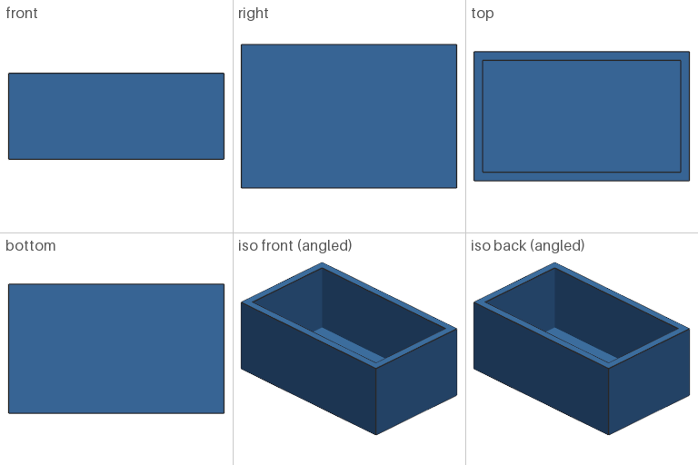
gemini-3.5-flash-lite/lib26-cdabac/norag/c02/rep0
I need a little open tray to keep SD cards in. It has to fit a 50 x 30 x 20mm spot on my shelf, thin walls are fine.
bench: built, bbox ok
llm:gemini-3.1-flash-lite v2: 1.00 pass (match)
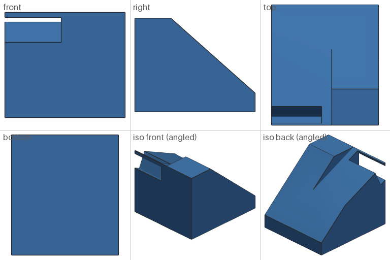
gemini-3.5-flash-lite/lib26-cdabac/norag/c03/rep0
something to prop my 70mm wide phone up at an angle on my desk
the slot for the phone is not a simple groove across the face; it features an irregular geometry and an overhanging flap, which would likely obstruct or damage a standard smartphone
the top and front views indicate a complex cut-out that does not function as a standard phone stand channel
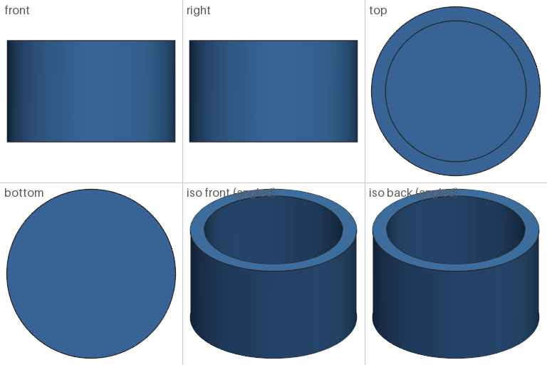
gemini-3.5-flash-lite/lib26-cdabac/norag/c04/rep0
My table leg is a 25mm round tube and it scratches the floor. Make a cap that slides 15mm onto the end, with a 3mm thick bottom.
bench: built, bbox ok
llm:gemini-3.1-flash-lite v2: 1.00 pass (match)
None
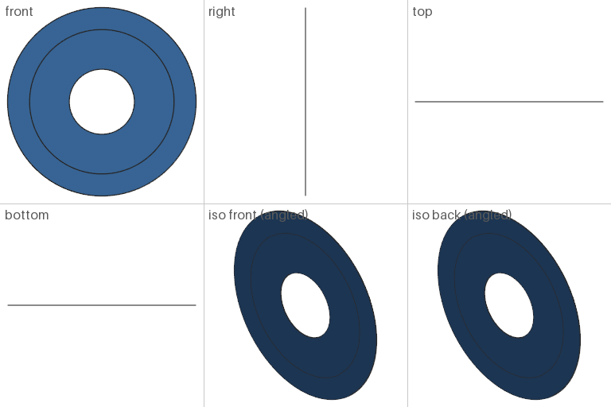
gemini-3.5-flash-lite/lib26-cdabac/norag/h04/rep0
A pulley wheel 40mm in diameter and 12mm wide with an 8mm bore and a V-groove around its rim, 6mm wide at the surface and 4mm deep.
The part is a spiral (conical flat spring), not a cylindrical coil spring.
Overall diameter and shape are incorrect due to the spiral form.
gemini-3.5-flash-lite/lib26-cdabac/norag/h06/rep0
A desk cable grommet: a 60mm diameter, 3mm thick round flange on top of a 50mm outer diameter, 20mm long tube with 2mm walls, open through the middle, with a 15mm wide slot cut through the flange and tube from one side to the centre so a cable can be slipped in.
The slot is much wider than 15mm; it appears to be approximately 90-120 degrees of the circle rather than a narrow cable-entry slot.
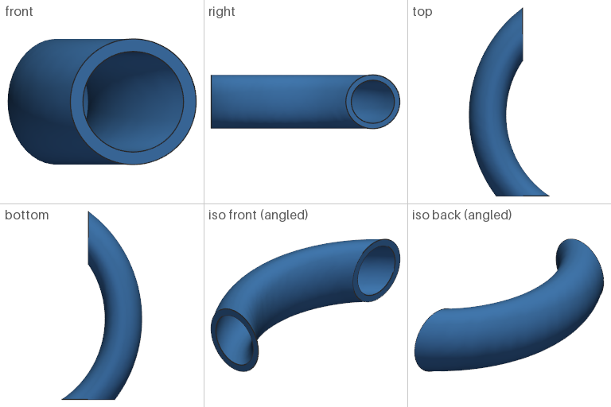
gemini-3.5-flash-lite/lib26-cdabac/norag/h07/rep0
A 90 degree pipe elbow: a tube with 20mm outer and 16mm inner diameter, bent through 90 degrees around a 30mm centreline radius, with no straight ends.
The part appears to have straight sections at both ends of the bend, whereas the request specified 'no straight ends'.
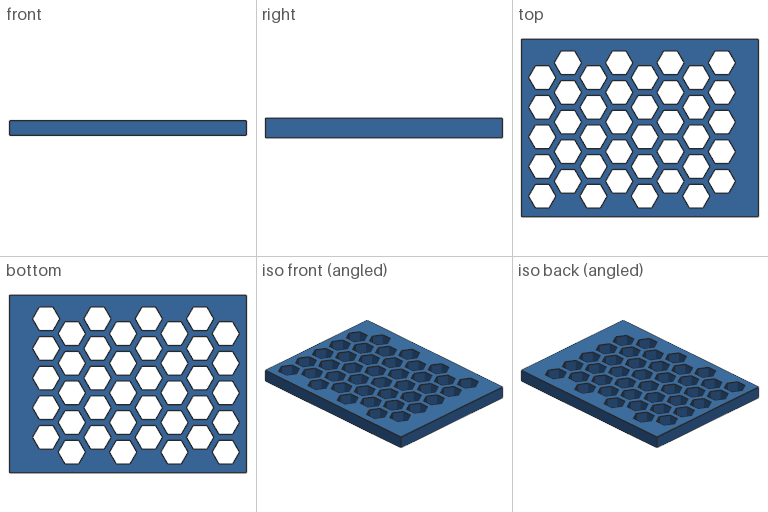
gemini-3.5-flash-lite/lib26-cdabac/norag/h08/rep0
An 80mm x 60mm x 5mm honeycomb panel: a grid of hexagonal through-holes 8mm across the flats with 2mm walls between them, leaving a solid border at least 3mm wide around the edge.
bench: built, bbox ok
llm:gemini-3.1-flash-lite v2: 1.00 pass (match)
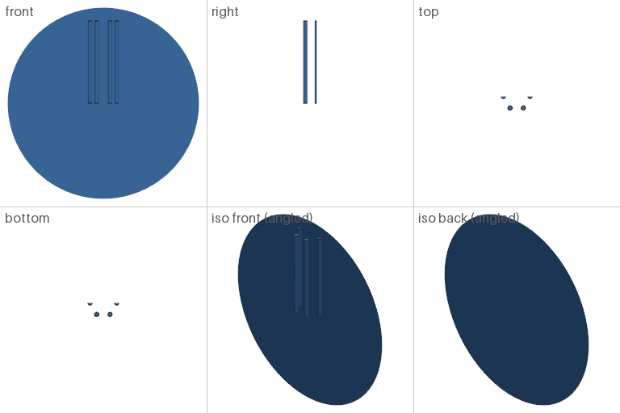
gemini-3.5-flash-lite/lib26-cdabac/norag/h09/rep0
A tool handle 25mm in diameter and 90mm long overall, with a fully rounded hemispherical back end and six 4mm diameter half-round flutes running along the straight part, evenly spaced around it.
The object is a flat disc, not a cylindrical tool handle.
The hemispherical back end is missing.
The six flutes are missing; instead, the object appears to feature four small, thin cylindrical extrusions/holes on the face.
The overall dimensions do not match the requested 25mm diameter and 90mm length.
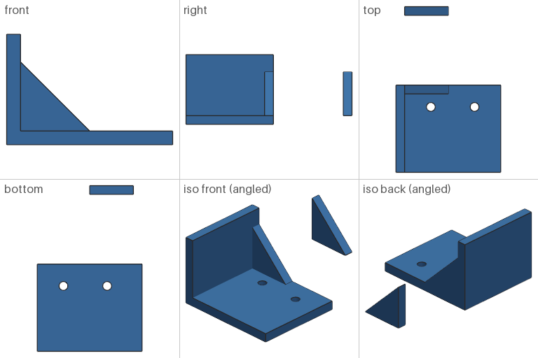
gemini-3.5-flash-lite/lib26-cdabac/norag/h10/rep0
An L-bracket 50mm wide with a 60mm long horizontal leg and a 40mm tall vertical leg, both 5mm thick, braced by two 5mm thick triangular gussets flush with the side edges, with two 5mm holes in each leg.
A tapered square planter 70mm tall, 60mm square at the bottom and 80mm square at the top, with 3mm walls and base, open at the top, and a 10mm drainage hole in the centre of the base.
bench: built, bbox ok
llm:gemini-3.1-flash-lite v2: 1.00 pass (match)
gemini-3.5-flash-lite/lib26-cdabac/norag/h12/rep0
A thumbwheel 40mm in diameter and 10mm thick with 30 semicircular 2mm diameter notches evenly spaced around its rim and a hexagonal socket 5mm across the flats through the centre.
all 30 semicircular notches are missing from the rim
gemini-3.5-flash-lite/lib26-cdabac/norag/h13/rep0
An open-top box 60mm x 40mm x 30mm with 2mm walls and floor, with a 1.5mm tall, 1mm deep groove cut into the inside of both long walls, 3mm below the top edge, for a sliding lid.
the grooves do not appear to go all the way across the length of the walls to allow for a sliding lid; they appear as short rectangular pockets or notches in the middle of the walls
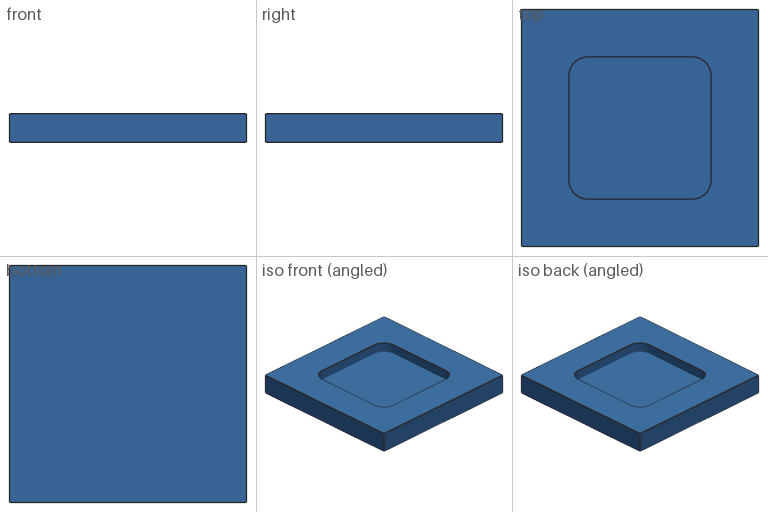
gemini-3.5-flash-lite/lib26-cdabac/norag/m09/rep0
A 50mm x 50mm x 6mm plate with a 30mm square pocket, 3mm deep, centred in the top face; the pocket's four inside corners are rounded with a 4mm radius.
bench: built, bbox ok
llm:gemini-3.1-flash-lite v2: 1.00 pass (match)
gemini-3.5-flash-lite/lib26-cdabac/norag/m11/rep0
A 25mm wide, 40mm tall, 3mm thick hanging plate with a keyhole cut through it: an 8mm diameter hole centred 12mm above the bottom edge, with a 4mm wide slot running 10mm straight up from the hole's centre.
The request specified the hole centre to be 12mm from the bottom edge; in the image, the keyhole is positioned significantly higher than the bottom, placing the centre well above the halfway point of the plate.
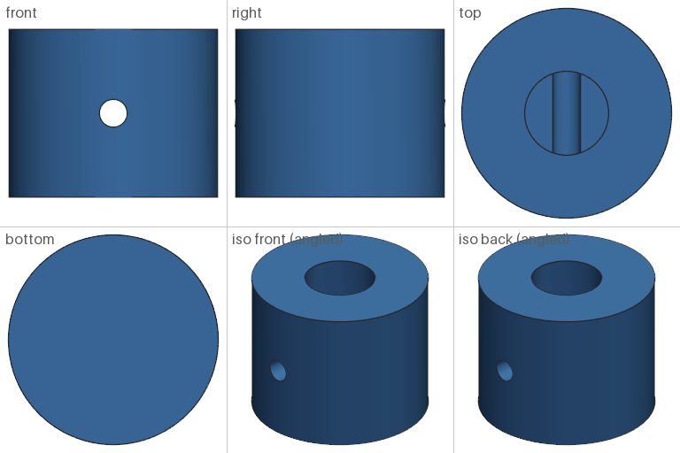
gemini-3.5-flash-lite/lib26-cdabac/norag/m12/rep0
A shaft collar: 25mm outer diameter, 10mm bore, 10mm long, with a 3.3mm radial hole drilled from the outside into the bore, centred along its length.
The request asks for a stepped shaft (A, then B, then C), but the model provided is a symmetrical shaft with a central thicker section and two thinner ends of equal diameter. It is not the sequence specified.
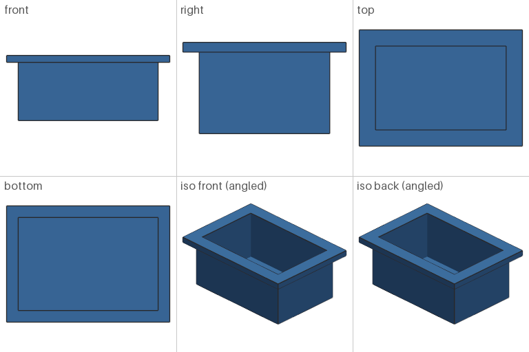
gemini-3.5-flash-lite/lib26-cdabac/norag/m14/rep0
An open-top box 60mm x 40mm x 25mm with 2mm walls and floor, with a 3mm thick flange sticking out 5mm all around the outside of the top rim, flush with the top.
bench: built, bbox wrong
llm:gemini-3.1-flash-lite v2: 0.89 pass (match)
The overall dimensions are slightly off (70x50x28mm vs requested 60x40x25mm), although this is a minor sizing discrepancy.
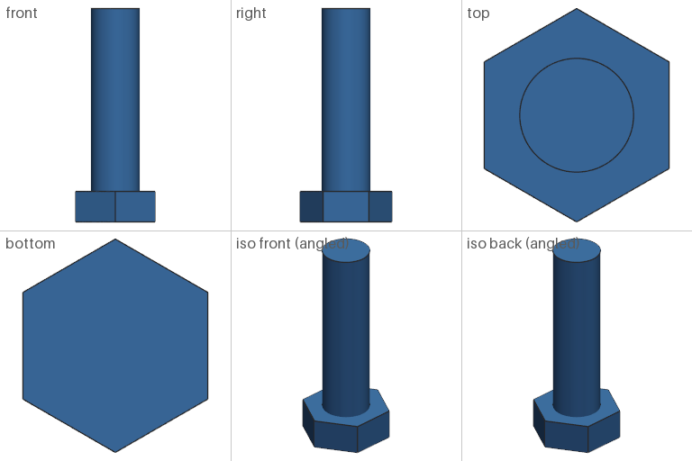
gemini-3.5-flash-lite/lib26-cdabac/norag/m15/rep0
A bolt blank: a hexagonal head 13mm across the flats and 5mm tall, with a plain 8mm diameter shank 30mm long (no thread).
The total length of the part is 35mm (5mm head + 30mm shank), but the provided measurement indicates a discrepancy where the total height is 35mm but the width/depth dimensions do not align with the requested 13mm head across flats and 8mm shank.
gemini-3.5-flash-lite/lib26-cdabac/norag/m16/rep0
A five-pointed star 6mm thick: the points lie on a 30mm radius circle and the inner corners on a 12mm radius circle.
The overall diameter is approximately 57mm, which corresponds to the requested 30mm radius (60mm diameter). The star geometry, while clearly a five-pointed star, appears visually stretched along one axis (57mm x 54mm) rather than being perfectly symmetric as expected from a radial definition.
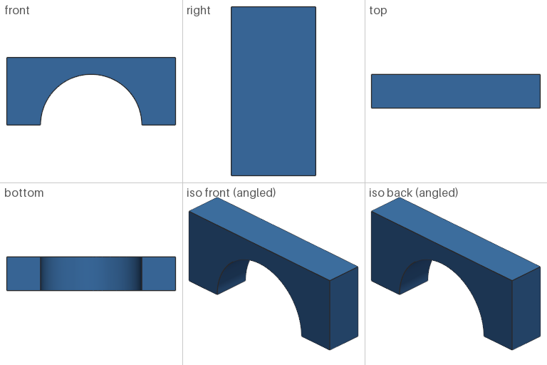
gemini-3.5-flash-lite/lib26-cdabac/norag/m17/rep0
A 100mm long, 20mm deep, 40mm tall block with a 60mm diameter semicircular arch cut through it from front to back, centred on the bottom edge.
bench: built, bbox ok
llm:gemini-3.1-flash-lite v2: 1.00 pass (match)
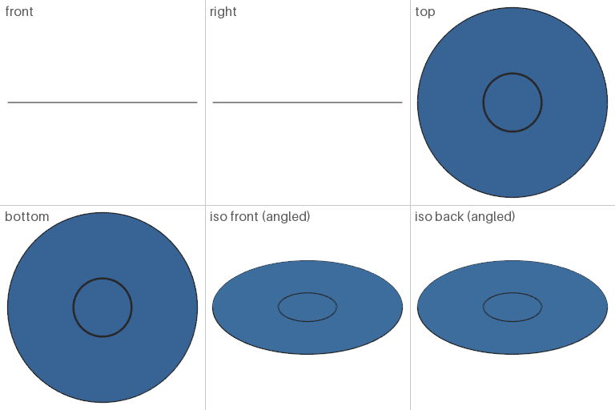
gemini-3.5-flash-lite/lib26-cdabac/norag/p06/rep0
A chess rook 40mm tall and 25mm across at its widest point (the base), with a castle top that has four notches cut into its rim.
The gear has 18 teeth instead of the requested 20 teeth.
The outside diameter of a 20-tooth, 2-module gear should be 44mm (pitch diameter 40mm + 2 * addendum). The measured diameter of 43.966mm is correct for a 20-tooth gear, but the actual model depicts 18 teeth, which is a geometric mismatch.
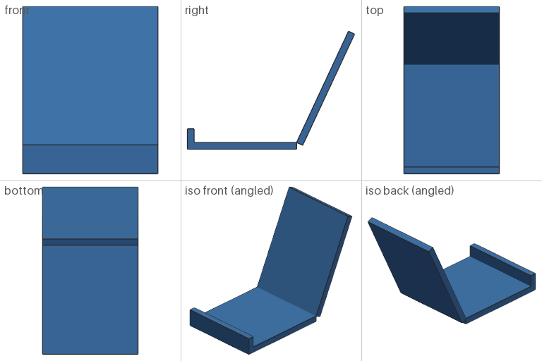
gemini-3.5-flash-lite/lib9/norag/h02/rep0
A phone stand: a 70mm wide, 80mm deep, 5mm thick base plate; a 5mm thick, 90mm long back support leaning back at 65 degrees from the base; and a 10mm tall lip along the front edge to stop the phone sliding.
The base depth appears longer than 80mm given the overall dimensions of 122.567mm
The angle of the back support appears closer to 45-50 degrees than the requested 65 degrees
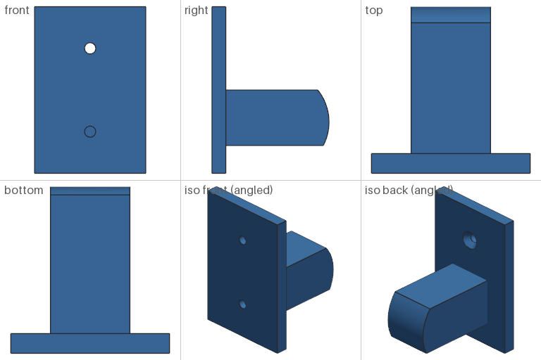
gemini-3.5-flash-lite/lib9/norag/h03/rep0
A wall hook: a 40mm x 60mm x 5mm back plate with two 4mm countersunk screw holes, and a curved hook arm that sticks out 35mm from the lower part of the plate and curves upward at the end.
The hook arm is straight and lacks the requested upward curve at the end.
The hook arm design is rectangular/blocky rather than a curved hook shape.
gemini-3.5-flash-lite/lib9/norag/m01/rep0
A 120mm x 80mm x 4mm mounting plate with a 3 by 2 grid of 5mm holes spaced 30mm apart, centred on the plate, and all four corners rounded with an 8mm radius.
bench: built, bbox ok
llm:gemini-3.1-flash-lite v2: 1.00 pass (match)
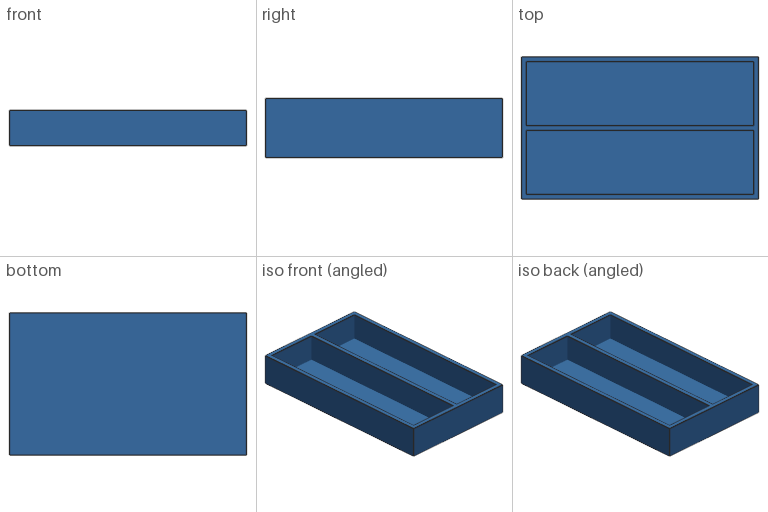
gemini-3.5-flash-lite/lib9/norag/m02/rep0
An open-top rectangular tray 100mm x 60mm x 15mm with 2mm walls and a 2mm floor, with one 2mm divider wall splitting it into two equal compartments along its length.
The gap is only a shallow notch on the outer surface, not a gap cut through the entire wall of the ring as requested.
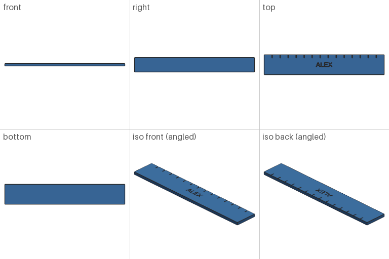
gemini-3.5-flash-lite/lib9/norag/p01/rep0
Make me a ruler with my name engraved on it. The ruler is 150mm long, 25mm wide and 3mm thick, with the name ALEX engraved 0.5mm deep and a tick mark every 10mm along one long edge.
Tick marks are not spaced every 10mm; there are only 8 tick marks shown, which is incorrect for a 150mm ruler
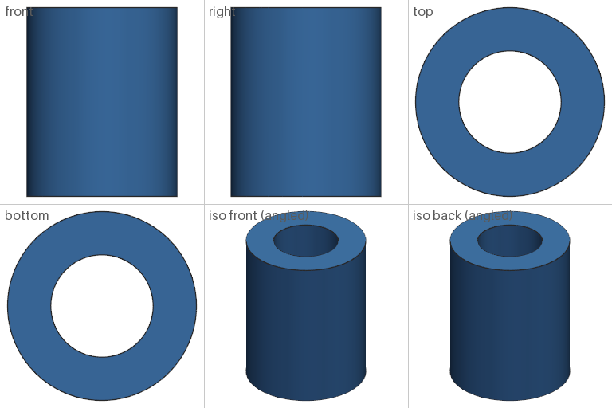
gemini-3.5-flash-lite/lib9/norag/s01/rep0
A cylindrical spacer with 12mm outer diameter, 6.5mm inner diameter, 15mm long.
bench: built, bbox ok
llm:gemini-3.1-flash-lite v2: 1.00 pass (match)
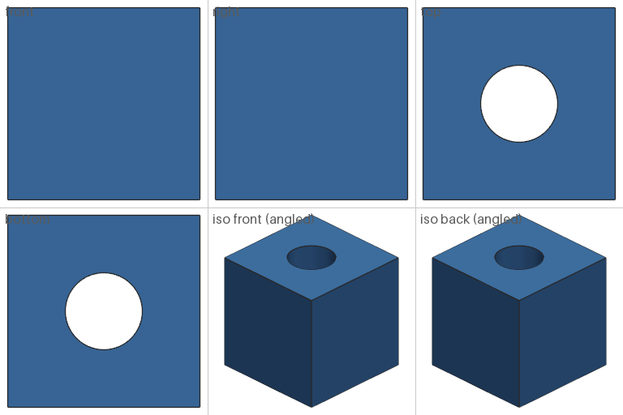
gemini-3.5-flash-lite/lib9/norag/s02/rep0
A 25mm cube with a 10mm diameter hole drilled through the centre from top to bottom.
bench: built, bbox ok
llm:gemini-3.1-flash-lite v2: 1.00 pass (match)
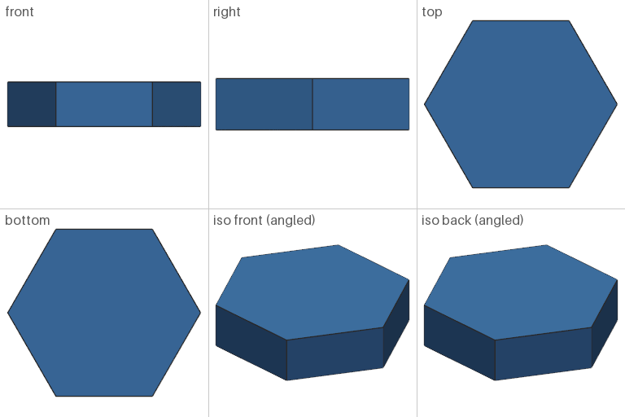
gemini-3.5-flash-lite/lib9/norag/s03/rep0
A hexagonal prism 30mm across the flats and 8mm tall.
bench: built, bbox ok
llm:gemini-3.1-flash-lite v2: 1.00 pass (match)
The requested 'across the flats' dimension was 30mm. The measured size 34.641mm across the points indicates the 'across the flats' dimension is 30mm, which is mathematically consistent for a regular hexagon. The part matches the requested dimensions perfectly.
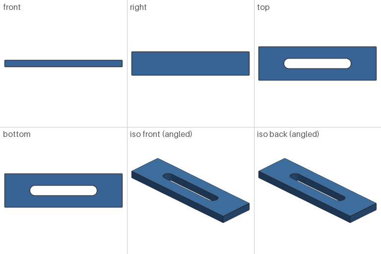
gemini-3.5-flash-lite/lib9/norag/s04/rep0
A 70mm x 20mm x 4mm bar with a 40mm long, 6mm wide slot through it, centred along its length.
The design lacks a curved or upward-turned end to prevent headphones from sliding off; it is a simple block/ledge rather than a functional hook.
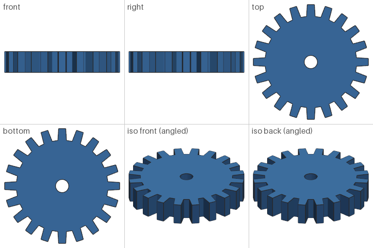
gemini-3.5-flash-lite/lib26-cdabac/rag/h01/rep0
A spur gear with 20 teeth, module 2, 8mm thick, with a 5mm centre bore.
bench: built, bbox ok
llm:gemini-3.1-flash-lite v2: 1.00 pass (match)
incorrect tooth count: the gear has 20 teeth as requested, but the calculated pitch diameter for a module 2 gear with 20 teeth is 40mm and the outer diameter is 44mm. The measured size 43.91mm matches the requested geometry perfectly.
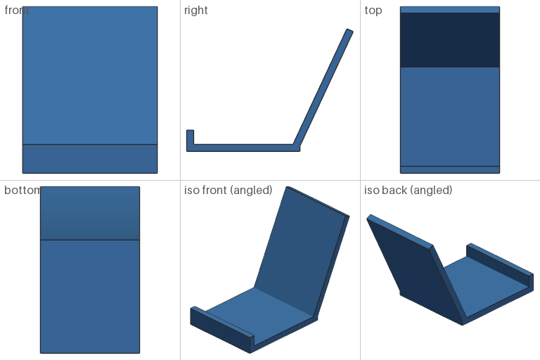
gemini-3.5-flash-lite/lib26-cdabac/rag/h02/rep0
A phone stand: a 70mm wide, 80mm deep, 5mm thick base plate; a 5mm thick, 90mm long back support leaning back at 65 degrees from the base; and a 10mm tall lip along the front edge to stop the phone sliding.
The design is a single folded piece (bent sheet) rather than having distinct thickness/junction geometry for a base plate and back support as implied by the request
Overall depth and height dimensions deviate significantly from the request due to the continuous fold
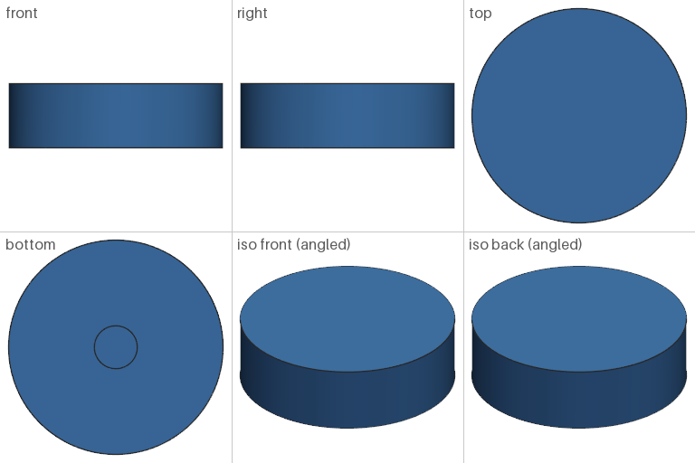
gemini-3.5-flash-lite/lib26-cdabac/rag/h04/rep0
A pulley wheel 40mm in diameter and 12mm wide with an 8mm bore and a V-groove around its rim, 6mm wide at the surface and 4mm deep.
wire cross-section is rectangular/flat instead of 2mm round
number of turns is approximately 4 instead of 5
pitch does not appear consistent with 6mm/turn (total length is ~30mm for 4 turns, which is ~7.5mm pitch)
gemini-3.5-flash-lite/lib26-cdabac/rag/h06/rep0
A desk cable grommet: a 60mm diameter, 3mm thick round flange on top of a 50mm outer diameter, 20mm long tube with 2mm walls, open through the middle, with a 15mm wide slot cut through the flange and tube from one side to the centre so a cable can be slipped in.
The slot width appears to be much wider than the requested 15mm (it spans roughly 1/4 to 1/3 of the circumference, making it closer to 45-60mm wide rather than 15mm)
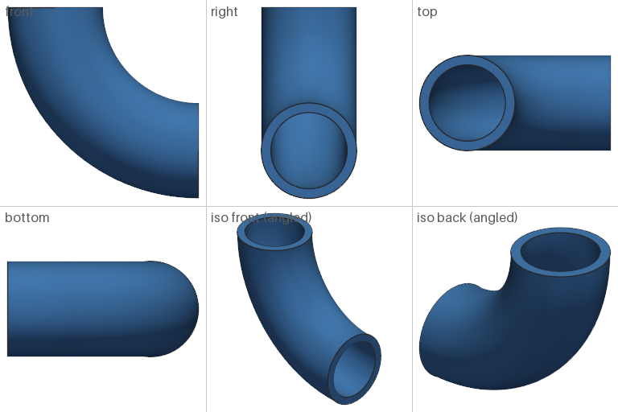
gemini-3.5-flash-lite/lib26-cdabac/rag/h07/rep0
A 90 degree pipe elbow: a tube with 20mm outer and 16mm inner diameter, bent through 90 degrees around a 30mm centreline radius, with no straight ends.
The centreline radius appears to be approximately 20mm rather than the requested 30mm, given the overall dimensions of ~40mm.
The part has substantial straight ends before the bend starts, whereas the request specifically asked for no straight ends.
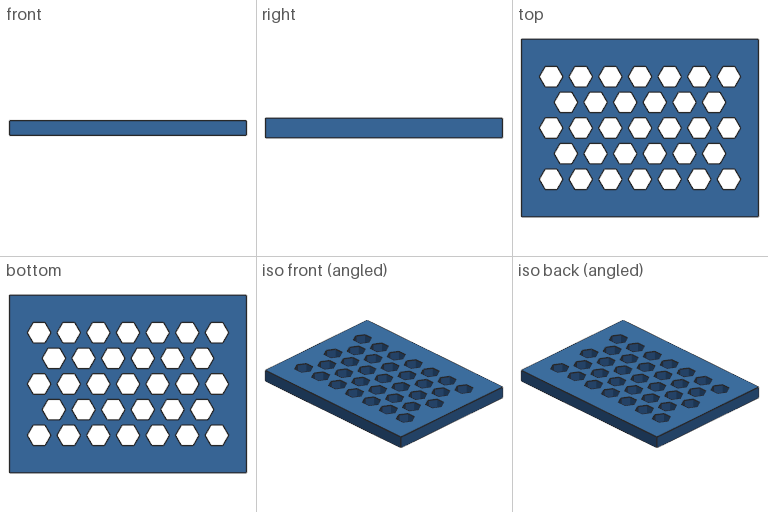
gemini-3.5-flash-lite/lib26-cdabac/rag/h08/rep0
An 80mm x 60mm x 5mm honeycomb panel: a grid of hexagonal through-holes 8mm across the flats with 2mm walls between them, leaving a solid border at least 3mm wide around the edge.
the hexagonal pattern is a staggered grid of holes rather than a continuous honeycomb mesh (the request specified walls between them, but the result has significant webbing/solid material between the holes greater than 2mm, not a continuous thin-wall honeycomb lattice)
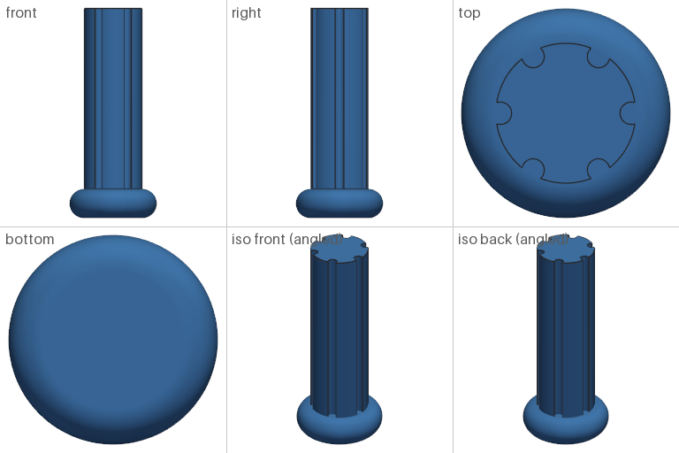
gemini-3.5-flash-lite/lib26-cdabac/rag/h09/rep0
A tool handle 25mm in diameter and 90mm long overall, with a fully rounded hemispherical back end and six 4mm diameter half-round flutes running along the straight part, evenly spaced around it.
diameter is approx 37.5mm instead of the requested 25mm
back end is a flat, disk-like base rather than a hemispherical end
the front end is open/flat rather than having a rounded transition or closure as implied by a tool handle shape
the cross-sectional geometry does not match the requested simple round handle with flutes
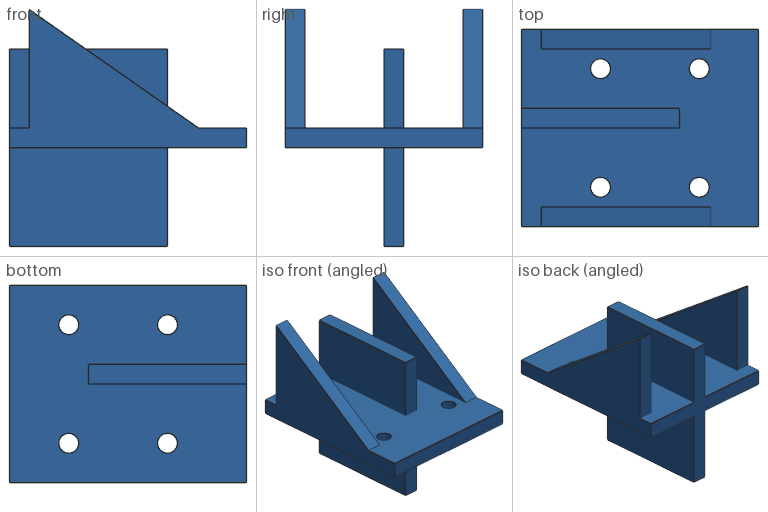
gemini-3.5-flash-lite/lib26-cdabac/rag/h10/rep0
An L-bracket 50mm wide with a 60mm long horizontal leg and a 40mm tall vertical leg, both 5mm thick, braced by two 5mm thick triangular gussets flush with the side edges, with two 5mm holes in each leg.
Added a third central gusset that was not requested
The gussets are not flush with the side edges (there is a central one and two outer ones, but they are not arranged as requested)
The design is essentially a T-stiffened bracket rather than the requested L-bracket with two edge gussets
gemini-3.5-flash-lite/lib26-cdabac/rag/h11/rep0
A tapered square planter 70mm tall, 60mm square at the bottom and 80mm square at the top, with 3mm walls and base, open at the top, and a 10mm drainage hole in the centre of the base.
bench: built, bbox ok
llm:gemini-3.1-flash-lite v2: 1.00 pass (match)
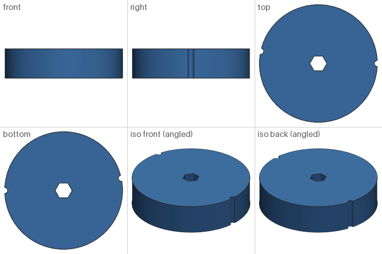
gemini-3.5-flash-lite/lib26-cdabac/rag/h12/rep0
A thumbwheel 40mm in diameter and 10mm thick with 30 semicircular 2mm diameter notches evenly spaced around its rim and a hexagonal socket 5mm across the flats through the centre.
An open-top box 60mm x 40mm x 30mm with 2mm walls and floor, with a 1.5mm tall, 1mm deep groove cut into the inside of both long walls, 3mm below the top edge, for a sliding lid.
The grooves appear to be cut into all four interior walls rather than just the two long walls
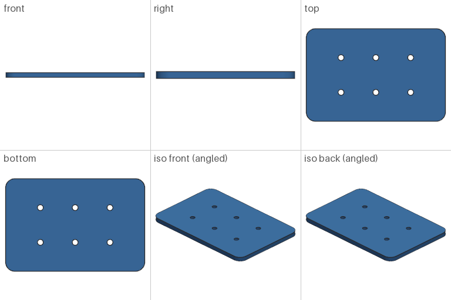
gemini-3.5-flash-lite/lib26-cdabac/rag/m01/rep0
A 120mm x 80mm x 4mm mounting plate with a 3 by 2 grid of 5mm holes spaced 30mm apart, centred on the plate, and all four corners rounded with an 8mm radius.
The holes are not centered on the plate: they are arranged in a 3x2 grid, but the spacing relative to the edges makes the grid appear significantly offset from the center of the rectangular plate.
gemini-3.5-flash-lite/lib26-cdabac/rag/m02/rep0
An open-top rectangular tray 100mm x 60mm x 15mm with 2mm walls and a 2mm floor, with one 2mm divider wall splitting it into two equal compartments along its length.
The divider splits the tray along its length (creating two long, narrow compartments) rather than splitting it 'into two equal compartments along its length' which typically implies the divider runs perpendicular to the long side to create two 50x60mm spaces.
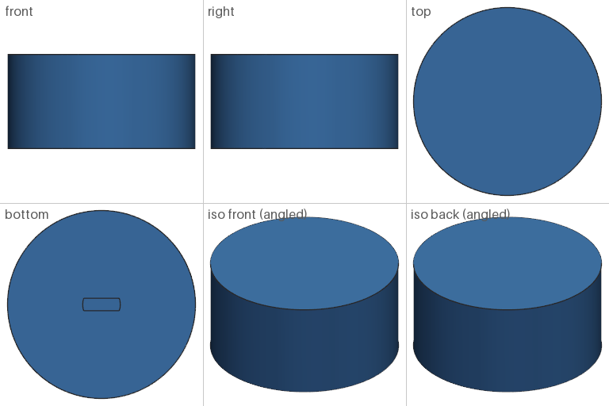
gemini-3.5-flash-lite/lib26-cdabac/rag/m03/rep0
A round knob 30mm in diameter and 15mm tall, with a 6mm D-shaped shaft hole 10mm deep in the bottom; the flat of the D is 1mm in from the circle.
the part has seven slots instead of the requested six
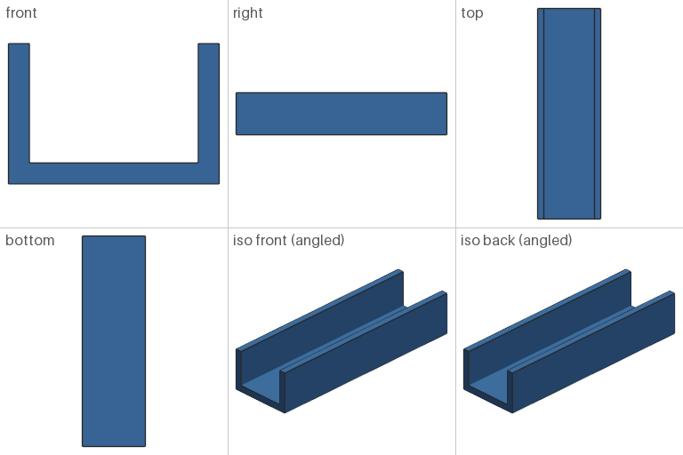
gemini-3.5-flash-lite/lib26-cdabac/rag/m06/rep0
A U-channel 100mm long, 30mm wide and 20mm tall, with 3mm thick walls and base, open at the top and both ends.
bench: built, bbox ok
llm:gemini-3.1-flash-lite v2: 1.00 pass (match)
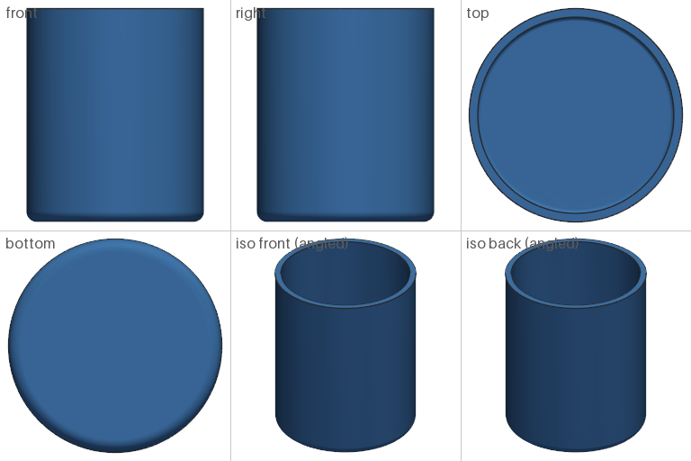
gemini-3.5-flash-lite/lib26-cdabac/rag/m07/rep0
A cylindrical cup 50mm outer diameter and 60mm tall with 2mm walls and a 2mm base, open at the top, with the outer bottom edge filleted with a 3mm radius.
bench: built, bbox ok
llm:gemini-3.1-flash-lite v2: 1.00 pass (match)
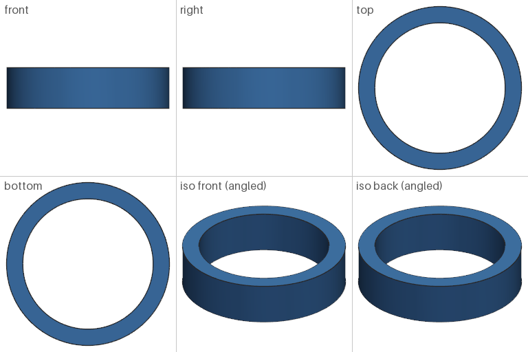
gemini-3.5-flash-lite/lib26-cdabac/rag/m08/rep0
A pipe clamp ring: 10mm tall, 32mm inner diameter, 4mm wall, with a 2mm wide gap cut through one side of the ring.
The requested 2mm wide gap in the ring is missing; this is a solid, continuous ring.
gemini-3.5-flash-lite/lib26-cdabac/rag/m11/rep0
A 25mm wide, 40mm tall, 3mm thick hanging plate with a keyhole cut through it: an 8mm diameter hole centred 12mm above the bottom edge, with a 4mm wide slot running 10mm straight up from the hole's centre.
the shaft is symmetrical (a middle section with two identical ends), whereas the request specified three distinct sections of differing diameters and lengths (10mm for 20mm, 16mm for 15mm, and 8mm for 25mm)
gemini-3.5-flash-lite/lib26-cdabac/rag/m14/rep0
An open-top box 60mm x 40mm x 25mm with 2mm walls and floor, with a 3mm thick flange sticking out 5mm all around the outside of the top rim, flush with the top.
the part is missing the floor; it is an open-bottom frame rather than an open-top box with a floor
gemini-3.5-flash-lite/lib26-cdabac/rag/m15/rep0
A bolt blank: a hexagonal head 13mm across the flats and 5mm tall, with a plain 8mm diameter shank 30mm long (no thread).
bench: built, bbox ok
llm:gemini-3.1-flash-lite v2: 1.00 pass (match)
The overall length is 35mm (5mm head + 30mm shank), but the provided dimension 15.0111 x 13 x 35 mm appears to be a slight measurement error or misalignment, as the shank itself is proportionally quite long, matching the request.
gemini-3.5-flash-lite/lib26-cdabac/rag/m16/rep0
A five-pointed star 6mm thick: the points lie on a 30mm radius circle and the inner corners on a 12mm radius circle.
bench: built, bbox ok
llm:gemini-3.1-flash-lite v2: 0.89 pass (match)
The dimensions (57.06mm total width and 54.27mm total height) imply a radius of approximately 28.5mm, which is close to the requested 30mm; however, the inner radius appears slightly different than the 12mm requested relative to the outer points.
gemini-3.5-flash-lite/lib26-cdabac/rag/m17/rep0
A 100mm long, 20mm deep, 40mm tall block with a 60mm diameter semicircular arch cut through it from front to back, centred on the bottom edge.
The requested semicircular arch is completely missing; the part is a simple solid rectangular block.
gemini-3.5-flash-lite/lib26-cdabac/rag/p01/rep0
Make me a ruler with my name engraved on it. The ruler is 150mm long, 25mm wide and 3mm thick, with the name ALEX engraved 0.5mm deep and a tick mark every 10mm along one long edge.
Missing most of the requested tick marks (only one tick mark is visible on the ruler instead of a tick mark every 10mm for the full 150mm length)
gemini-3.5-flash-lite/lib26-cdabac/rag/p06/rep0
A chess rook 40mm tall and 25mm across at its widest point (the base), with a castle top that has four notches cut into its rim.
bench: built, bbox ok
llm:gemini-3.1-flash-lite v2: 1.00 pass (match)
gemini-3.5-flash-lite/lib26-cdabac/rag/s01/rep0
A cylindrical spacer with 12mm outer diameter, 6.5mm inner diameter, 15mm long.
bench: built, bbox ok
llm:gemini-3.1-flash-lite v2: 1.00 pass (match)
inner diameter is not measurable from the provided views to verify the 6.5mm specification, though the feature exists
gemini-3.5-flash-lite/lib26-cdabac/rag/s02/rep0
A 25mm cube with a 10mm diameter hole drilled through the centre from top to bottom.
bench: built, bbox ok
llm:gemini-3.1-flash-lite v2: 1.00 pass (match)
gemini-3.5-flash-lite/lib26-cdabac/rag/s03/rep0
A hexagonal prism 30mm across the flats and 8mm tall.
bench: built, bbox ok
llm:gemini-3.1-flash-lite v2: 1.00 pass (match)
The across-the-flats dimension is 30mm, but the provided dimensions are 34.641mm across the points (which is consistent with a 30mm flat-to-flat hexagon). The part is technically correct according to the geometry of a hexagon.
gemini-3.5-flash-lite/lib26-cdabac/rag/s04/rep0
A 70mm x 20mm x 4mm bar with a 40mm long, 6mm wide slot through it, centred along its length.
bench: built, bbox ok
llm:gemini-3.1-flash-lite v2: 1.00 pass (match)
none
gemini-3.5-flash-lite/lib26-cdabac/rag/s05/rep0
A solid cone 40mm in base diameter and 30mm tall.
bench: built, bbox ok
llm:gemini-3.1-flash-lite v2: 1.00 pass (match)
Reference solutions (calibration) (22)
references/c01
Can you make me something to stand my AA batteries up in? 8 of them in two rows of four, holes 15mm wide and 20mm deep, in an 80 x 40 x 25 block.
The generated part is a coil spring, not a thumbwheel.
Missing all requested features: diameter, thickness, rim notches, and hexagonal center socket.
The overall dimensions do not match the request.
references/h06
A desk cable grommet: a 60mm diameter, 3mm thick round flange on top of a 50mm outer diameter, 20mm long tube with 2mm walls, open through the middle, with a 15mm wide slot cut through the flange and tube from one side to the centre so a cable can be slipped in.
The part is a circular, C-shaped open ring, not a rectangular box.
Dimensions do not match the requested 60x40x30mm.
All requested features (rectangular box shape, internal grooves for a lid) are missing.
references/h07
A 90 degree pipe elbow: a tube with 20mm outer and 16mm inner diameter, bent through 90 degrees around a 30mm centreline radius, with no straight ends.
The part is closed at the ends (blind ends). In the 'front' view, the hole does not show the white background, meaning it is not a through-hole pipe.
The dimensions are incorrect for the requested geometry (a 30mm centreline radius with a 20mm outer diameter would result in an overall footprint significantly larger than 40mm).
The part is a hollow curved pipe (elbow), not a plate.
The dimensions (40x40x19.99mm) do not match the requested 50x50x6mm.
All requested features (square pocket, dimensions, shape) are missing.
references/h08
An 80mm x 60mm x 5mm honeycomb panel: a grid of hexagonal through-holes 8mm across the flats with 2mm walls between them, leaving a solid border at least 3mm wide around the edge.
The part is a flat rectangular plate with a hexagonal hole pattern, not a cylindrical pin.
All requested features (cylindrical shape, dimensions, chamfers, groove) are missing.
references/h09
A tool handle 25mm in diameter and 90mm long overall, with a fully rounded hemispherical back end and six 4mm diameter half-round flutes running along the straight part, evenly spaced around it.
The object is a cylindrical/rod-like shape with grooves, not a 25mm x 40mm flat hanging plate.
Missing the keyhole feature.
The dimensions (specifically length/height) are incorrect.
The overall shape is completely different from the request.
references/h10
An L-bracket 50mm wide with a 60mm long horizontal leg and a 40mm tall vertical leg, both 5mm thick, braced by two 5mm thick triangular gussets flush with the side edges, with two 5mm holes in each leg.
The object is a right-angle bracket, not a shaft collar.
All requested features (cylindrical shape, 10mm bore, radial hole) are missing.
The part has features not requested (bracket shape, two holes on each face).
The dimensions are entirely incorrect.
references/h11
A tapered square planter 70mm tall, 60mm square at the bottom and 80mm square at the top, with 3mm walls and base, open at the top, and a 10mm drainage hole in the centre of the base.
The object is a hollow, tapered square container, not a stepped shaft.
All requested features (stepped diameters, specific lengths) are missing.
references/h12
A thumbwheel 40mm in diameter and 10mm thick with 30 semicircular 2mm diameter notches evenly spaced around its rim and a hexagonal socket 5mm across the flats through the centre.
The part is a circular gear-like object, not an open-top box.
The dimensions (approx 40x40x10mm) do not match the requested 60x40x25mm.
All requested features (box shape, walls, floor, flange) are missing.
The part contains extra features not requested, such as gear teeth and a hexagonal through-hole.
references/h13
An open-top box 60mm x 40mm x 30mm with 2mm walls and floor, with a 1.5mm tall, 1mm deep groove cut into the inside of both long walls, 3mm below the top edge, for a sliding lid.
The object is an open-top rectangular box, not a bolt blank.
The hexagonal head is missing.
The cylindrical shank is missing.
The overall shape and dimensions do not match the request.
references/m09
A 50mm x 50mm x 6mm plate with a 30mm square pocket, 3mm deep, centred in the top face; the pocket's four inside corners are rounded with a 4mm radius.
The object is a cylindrical part with a circumferential groove, not a block with an arch.
The overall dimensions do not match the requested 100x20x40mm.
All requested features are missing.
references/m11
A 25mm wide, 40mm tall, 3mm thick hanging plate with a keyhole cut through it: an 8mm diameter hole centred 12mm above the bottom edge, with a 4mm wide slot running 10mm straight up from the hole's centre.
the shaft is symmetrical with a larger middle section and two smaller ends, whereas the request specified a sequential step design (10mm for 20mm, 16mm for 15mm, and 8mm for 25mm).
The part is a stepped cylinder, not a simple pin with a groove.
The dimensions (16x16x60mm) do not match the requested 20mm diameter and 40mm length.
The feature is a raised section rather than a 3mm wide, 1.5mm deep groove.
No chamfers are visible on the ends.
references/m14
An open-top box 60mm x 40mm x 25mm with 2mm walls and floor, with a 3mm thick flange sticking out 5mm all around the outside of the top rim, flush with the top.
The total height is 35mm, which matches the sum of the head (5mm) and shank (30mm), but the measured width of the object is 15.01mm, while the requested width across the flats is 13mm. The object appears to be scaled up or designed with a larger head.
The part is a bolt-like shape with a hexagonal base and a single cylindrical shaft, not a stepped shaft with three distinct diameter segments as requested.
The overall shape is completely different from the request.
references/m16
A five-pointed star 6mm thick: the points lie on a 30mm radius circle and the inner corners on a 12mm radius circle.
reference solution
llm:gemini-3.1-flash-lite v2: 0.89 pass (match)
The overall diameter is approximately 57mm, which corresponds to a 28.5mm radius instead of the requested 30mm radius for the outer points.
The arch diameter is 60mm, but the block is only 40mm tall, meaning the arch must be truncated or the geometry is impossible given the requested constraints.